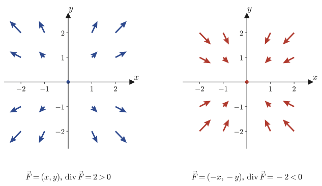
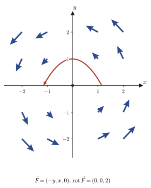

Chapter 19Divergence and Curl
In the previous chapter we learned that applying an operation called the gradient to a scalar field $f$ produces a vector field $\grad f=\nabla f$, and that this vector points in “the direction in which $f$ increases most steeply.” The gradient is an operation that “makes a vector field from a scalar field.” In this chapter, conversely, we introduce two new operations that make a scalar field or a vector field from a vector field. One is the divergence, and the other is the curl (also called rotation). Both are written with the same symbol $\nabla$ (nabla): the divergence is something like an “inner product” of $\nabla$ with the vector field $\vec f$, and the curl is something like a “cross product.”
The divergence measures “how much of a source or sink there is at that point,” and the curl measures “how much of a vortex there is at that point.” For example, at a place where water gushes out of a faucet, the divergence at that point is positive, and where the wind swirls around, as around the eye of a typhoon, the curl is large. Together with the gradient, these two operations make up the set of three, $\grad,\ \operatorname{div},\ \rot$, a central tool of vector analysis that appears directly in all of Maxwell's equations of electromagnetism, the continuity equation of fluid dynamics, and the heat equation and the diffusion equation that occur so often in materials science. Furthermore, combining the divergence and the gradient gives rise to a second-order differential operator called the Laplacian, which governs the heat equation $\partial u/\partial t=k\Delta u$ and the spatial part of the wave equation, and is one of the operators that appear most frequently in physics. By the end of this chapter, you should be able to derive on your own the two remarkable identities that hold among these three operators: $\operatorname{div}(\rot\vec f)=0$ (the curl has no divergence) and $\rot(\grad\varphi)=0$ (the gradient has no curl).
- The definition of the divergence $\operatorname{div}\vec f=\nabla\cdot\vec f$ (in the plane and in space), and the more rigorous definition as “the limit of the outflow per unit volume”
- The complete derivation of the linearity of the divergence, $\operatorname{div}(C_1\vec f_1+C_2\vec f_2)=C_1\operatorname{div}\vec f_1+C_2\operatorname{div}\vec f_2$, and of the product formula $\operatorname{div}(\varphi\vec f)=(\nabla\varphi)\cdot\vec f+\varphi(\nabla\cdot\vec f)$
- Computing the divergence of the radial vector fields $\vec p$ and $\abs{\vec p}^n\vec p$ both in the plane and in space
- Deriving with equations, from the way water flows in and out of a small square, that the divergence is “the net outflow per unit area or unit volume” (the physical meaning of the divergence)
- Introducing the Laplacian $\Delta=\nabla\cdot\nabla=\nabla^2$ as “the divergence of the gradient,” Laplace's equation $\Delta f=0$ and harmonic functions, and the caution that $\grad(\operatorname{div}\vec f)$ is not the Laplacian
- The definition of the curl $\rot\vec f=\nabla\times\vec f$, and the “criss-cross” mnemonic (called “tasuki-gake” in Japanese) for finding the components of the cross product
- The linearity of the curl and the product formula $\rot(\varphi\vec f)=(\nabla\varphi)\times\vec f+\varphi\rot\vec f$
- The derivation of the four identities $\rot\vec P=\vec 0$, $\rot(\abs{\vec P}^n\vec P)=\vec 0$, $\operatorname{div}(\rot\vec f)=0$, and $\rot(\grad\varphi)=\vec 0$, and the physical meaning of the curl (the strength of a vortex)
Source notes: Yasuhide Mochizuki, Mathematics Notes: Vector Analysis, pp. 33–40.
19.1 Definition and Basic Formulas of Divergence
In the previous chapter we saw that when the nabla $\nabla$ is written in components, in space it becomes $\nabla=\left[\pdiff{}{x},\ \pdiff{}{y},\ \pdiff{}{z}\right]$, a “quasi-vector whose components are partial derivatives,” and that “multiplying” it onto a scalar field $f$ gives the gradient $\grad f=\nabla f$. Recall that vectors have two kinds of products, the inner product (also called the dot product, $\cdot$) and the cross product ($\times$) (Chapter 15). This naturally raises the following question: what is produced if we consider the inner product $\nabla\cdot\vec f$ or the cross product $\nabla\times\vec f$ of $\nabla$ with a vector field $\vec f$? In this section we first treat the inner product. We call it the divergence and denote it by the symbol $\operatorname{div}$ (div is an abbreviation of divergence).
Definition 19.1: Divergence of a plane vector field
For a plane vector field $\vec f(x,y)=[f(x,y),\ g(x,y)]$, we define the divergence $\operatorname{div}\vec f$ by
$$ \operatorname{div}\vec f=\nabla\cdot\vec f=\pdiff{f}{x}+\pdiff{g}{y} \tag{19.1}\label{eq:19-div-plane} $$The right-hand side is the inner product $\nabla\cdot\vec f=\pdiff{}{x}\cdot f+\pdiff{}{y}\cdot g$ of $\nabla=\left[\pdiff{}{x},\pdiff{}{y}\right]$ and $\vec f=[f,g]$, written out with the partial-derivative symbols left as they are. Since the result of an inner product is a scalar, note that $\operatorname{div}\vec f$ is an operation that produces a scalar field from a vector field (exactly the reverse of the gradient, which produced a vector field from a scalar field).
Why?: A “more correct” definition of div
Eq. \eqref{eq:19-div-plane} is a component expression that is convenient for computation, but the true definition of the divergence is given by the following limit, which does not depend on the coordinate system.
$$ \operatorname{div}\vec f=\lim_{\Delta V\to0}\frac{\displaystyle\oint_S\vec f\cdot\dd\vec S}{\Delta V} \tag{19.2}\label{eq:19-div-flux} $$Here $\Delta V$ is a small volume around a point, and $S$ is its surface (a closed surface enclosing $\Delta V$). $\oint_S\vec f\cdot\dd\vec S$ represents the net amount of $\vec f$ passing through the whole closed surface $S$ (the surface integral). In the planar (two-dimensional) case, $S$ is replaced by a closed curve enclosing $\Delta V$ (which in this case is an area). In other words, the divergence measures “how much $\vec f$ is flowing out, as from a source, from a small volume surrounding the point, per unit volume,” and Eq. \eqref{eq:19-div-plane} (or its spatial version, Eq. \eqref{eq:19-div-space}) is merely the result obtained by actually evaluating this limit. Since we have not yet defined the surface integral itself, we leave to the next chapter (Chapter 20) the proof that this limit definition agrees with the component expression in Eq. \eqref{eq:19-div-plane} (the local version of Gauss's divergence theorem). For now, we would like you to take away just the intuition “divergence = outflow per unit volume.” We will check this intuition once more in Section 19.2, this time properly with formulas, using a small square.
Definition 19.2: Divergence of a spatial vector field
For a spatial vector field $\vec f(x,y,z)=[f(x,y,z),\ g(x,y,z),\ h(x,y,z)]$, we define the divergence $\operatorname{div}\vec f$ by
$$ \operatorname{div}\vec f=\nabla\cdot\vec f=\pdiff{f}{x}+\pdiff{g}{y}+\pdiff{h}{z} \tag{19.3}\label{eq:19-div-space} $$This is a natural extension of the planar case (there is one more component, and hence just one more corresponding partial-derivative term).
The divergence, too, has two basic formulas, analogous to those for differentiation. Both show that we can handle “$\nabla\cdot$” just as we do with the properties of the ordinary inner product and with the product rule for derivatives.
Formula 19.1: Linearity of the divergence
Let $\vec f_1,\vec f_2$ be vector fields (of the same dimension) and $C_1,C_2$ constants. Then
$$ \operatorname{div}(C_1\vec f_1+C_2\vec f_2)=C_1\operatorname{div}\vec f_1+C_2\operatorname{div}\vec f_2 . \tag{19.4}\label{eq:19-div-linear} $$Derivation: Formula 19.1
Applying $\nabla\cdot$ as in the definition, we get
$$ \operatorname{div}(C_1\vec f_1+C_2\vec f_2)=\nabla\cdot(C_1\vec f_1+C_2\vec f_2) $$Here $\nabla\cdot(\ )$ is a sum of componentwise products (an inner product), so for exactly the same reason that the ordinary inner product of vectors satisfies the distributive law $\vec a\cdot(\vec b+\vec c)=\vec a\cdot\vec b+\vec a\cdot\vec c$, we can distribute what is inside $\nabla\cdot$.
$$ =\nabla\cdot(C_1\vec f_1)+\nabla\cdot(C_2\vec f_2)=C_1(\nabla\cdot\vec f_1)+C_2(\nabla\cdot\vec f_2) $$(The last equality holds because the constants $C_1,C_2$ can be taken outside the partial derivatives.) If we rewrite $\nabla\cdot\vec f_1=\operatorname{div}\vec f_1$ and $\nabla\cdot\vec f_2=\operatorname{div}\vec f_2$, then
$$ \operatorname{div}(C_1\vec f_1+C_2\vec f_2)=C_1\operatorname{div}\vec f_1+C_2\operatorname{div}\vec f_2 $$and the claim is proved. ∎
Formula 19.2: Product formula for the divergence
Let $\varphi$ be a scalar-valued function and $\vec f$ a vector field. Then
$$ \operatorname{div}(\varphi\vec f)=(\nabla\varphi)\cdot\vec f+\varphi\,(\nabla\cdot\vec f)=(\grad\varphi)\cdot\vec f+\varphi\operatorname{div}\vec f . \tag{19.5}\label{eq:19-div-product} $$Derivation: Formula 19.2
We prove it in the spatial case (the planar case is similar, with just one fewer term). Let $\vec f=[f,g,h]$. Writing out the expression componentwise according to Definition 19.2, we get
$$ \operatorname{div}(\varphi\vec f)=\nabla\cdot(\varphi\vec f)=\nabla\cdot[\varphi f,\ \varphi g,\ \varphi h]=\pdiff{}{x}(\varphi f)+\pdiff{}{y}(\varphi g)+\pdiff{}{z}(\varphi h) . $$Each term on the right-hand side is merely a partial derivative, with respect to a single variable, of a product of two functions, $\varphi$ and one of $f,g,h$, so we can apply the product rule $(uv)'=u'v+uv'$ learned in high school directly to partial differentiation.
Math Note: The product rule (partial-derivative version)
$$ \pdiff{}{x}(\varphi f)=\pdiff{\varphi}{x}f+\varphi\pdiff{f}{x},\qquad \pdiff{}{y}(\varphi g)=\pdiff{\varphi}{y}g+\varphi\pdiff{g}{y},\qquad \pdiff{}{z}(\varphi h)=\pdiff{\varphi}{z}h+\varphi\pdiff{h}{z} . $$(When we differentiate partially with respect to $x$, we regard $y,z$ as constants, so the one-variable product rule in $x$ alone can be used as it is. The same holds for $y,z$.)
Adding these three equalities, we get
$$ \operatorname{div}(\varphi\vec f)=\underbrace{\left(\pdiff{\varphi}{x}f+\pdiff{\varphi}{y}g+\pdiff{\varphi}{z}h\right)}_{[\partial\varphi/\partial x,\ \partial\varphi/\partial y,\ \partial\varphi/\partial z]\cdot[f,g,h]}+\ \varphi\underbrace{\left(\pdiff{f}{x}+\pdiff{g}{y}+\pdiff{h}{z}\right)}_{\nabla\cdot\vec f} $$The expression inside the first underbrace is exactly the inner product $(\nabla\varphi)\cdot\vec f$ of $\nabla\varphi=\left[\pdiff{\varphi}{x},\pdiff{\varphi}{y},\pdiff{\varphi}{z}\right]$ and $\vec f=[f,g,h]$ (the form “a sum of three products” agrees with the definition of the inner product). The second underbrace is $\nabla\cdot\vec f$ of Definition 19.2. Therefore, we obtain
$$ \operatorname{div}(\varphi\vec f)=(\nabla\varphi)\cdot\vec f+\varphi(\nabla\cdot\vec f) $$∎
Next, let us actually use these two formulas to compute the divergence of a vector field that spreads out radially. The vector field $\vec p$ used here is the position vector itself (the field that assigns to each point $(x,y)$ the vector $[x,y]$ from the origin to that point).
Illustration 19.1: Divergence of the position vector field in the plane
Let $\vec p=[x,\ y]$. Then
(I) $\operatorname{div}\vec p=2$.
(II) $\operatorname{div}(\abs{\vec p}^n\vec p)=(n+2)\abs{\vec p}^n$ ($n$ is a real number).
Solution. (I) We substitute directly into Definition 19.1. Since $f=x,\ g=y$, we have $\pdiff fx=\pdiff xx=1$ and $\pdiff gy=\pdiff yy=1$, and therefore
$$ \operatorname{div}\vec p=\pdiff xx+\pdiff yy=1+1=2 . $$(II) We use Formula 19.2 with $\varphi=\abs{\vec p}^n$ and $\vec f=\vec p$. From the formula $\grad\abs{\vec P}^n=n\abs{\vec P}^{n-2}\vec P$ in Section 18.5, Formula 18.3 in the previous chapter (there the position vector is written $\vec P$, but in this section the same formula holds when we write it as $\vec p$), we saw that $\nabla\abs{\vec p}^n=\grad\abs{\vec p}^n=n\abs{\vec p}^{n-2}\vec p$. Substituting this together with the result of (I), $\nabla\cdot\vec p=2$, we get
$$ \operatorname{div}(\abs{\vec p}^n\vec p)=\big(\nabla\abs{\vec p}^n\big)\cdot\vec p+\abs{\vec p}^n(\nabla\cdot\vec p) =\big(n\abs{\vec p}^{n-2}\vec p\big)\cdot\vec p+\abs{\vec p}^n\cdot2 . $$Here $\vec p\cdot\vec p=\abs{\vec p}^2$ (the basic property that the inner product of a vector with itself is the square of its magnitude), so the first term becomes
$$ n\abs{\vec p}^{n-2}(\vec p\cdot\vec p)=n\abs{\vec p}^{n-2}\cdot\abs{\vec p}^2=n\abs{\vec p}^n $$(we used the law of exponents $\abs{\vec p}^{n-2}\cdot\abs{\vec p}^2=\abs{\vec p}^{(n-2)+2}=\abs{\vec p}^n$). Hence we obtain
$$ \operatorname{div}(\abs{\vec p}^n\vec p)=n\abs{\vec p}^n+2\abs{\vec p}^n=(n+2)\abs{\vec p}^n $$(Verified with SymPy. When $n$ is negative or a non-integer real number, $\abs{\vec p}^n$ cannot be defined at the origin (or else becomes a real power of $0$ or of a negative number), so we consider this result for $\vec p\neq\vec 0$, that is, with the origin excluded.)
Illustration 19.2: Divergence of the position vector field in space
Let $\vec p=[x,\ y,\ z]$. Then
(I) $\operatorname{div}\vec p=3$.
(II) $\operatorname{div}(\abs{\vec p}^n\vec p)=(n+3)\abs{\vec p}^n$.
Solution. (I) We simply substitute directly into Definition 19.2. From $f=x,g=y,h=z$ we have $\pdiff fx=\pdiff gy=\pdiff hz=1$, so
$$ \operatorname{div}\vec p=\pdiff xx+\pdiff yy+\pdiff zz=1+1+1=3 . $$(II) In exactly the same way as in Illustration 19.1(II), we substitute $\varphi=\abs{\vec p}^n$ and $\vec f=\vec p$ into Formula 19.2. Since Formula 18.3 of the previous chapter, $\grad\abs{\vec p}^n=n\abs{\vec p}^{n-2}\vec p$, holds in space as well,
$$ \operatorname{div}(\abs{\vec p}^n\vec p)=\big(n\abs{\vec p}^{n-2}\vec p\big)\cdot\vec p+\abs{\vec p}^n\underbrace{(\nabla\cdot\vec p)}_{=\,3} =n\abs{\vec p}^{n-2}\underbrace{(\vec p\cdot\vec p)}_{=\,\abs{\vec p}^2}+3\abs{\vec p}^n=n\abs{\vec p}^n+3\abs{\vec p}^n=(n+3)\abs{\vec p}^n . $$(Verified with SymPy. As in Illustration 19.1(II), when $n$ is negative or a non-integer real number, we assume $\vec p\neq\vec 0$ (the origin is excluded).) In two dimensions we get $+2$ and in three dimensions $+3$; note that $\operatorname{div}\vec p=$ (the number of dimensions) appears directly as the correction term to the exponent. This corresponds to the intuition “divergence = source output per dimension” that we will see in Section 19.2.
Example 19.1: Divergence of a polynomial vector field
Find the divergence $\operatorname{div}\vec F$ of $\vec F=[x^2,\ y^2,\ z^2]$.
Solution. By Definition 19.2, we differentiate each component partially with respect to its own variable and add the results. We have $\pdiff{}{x}(x^2)=2x$, $\pdiff{}{y}(y^2)=2y$, $\pdiff{}{z}(z^2)=2z$ (note that these are not partial derivatives with respect to the other variables; for example, the partial derivative of $x^2$ with respect to $y$ is $0$), so
$$ \operatorname{div}\vec F=2x+2y+2z . $$We see that the farther we go from the origin (the larger the values of $x,y,z$), the larger the divergence becomes, that is, the stronger the source. In particular, in the first octant ($x,y,z\gt0$) we always have $\operatorname{div}\vec F\gt0$. (Verified with SymPy.)
19.2 Physical Meaning of Divergence — Thinking in Terms of the Flow of Water
In Section 19.1 we introduced the divergence as a computation with symbols, but this alone makes it hard to get a picture of “what the divergence actually is.” So let us now verify, with actual formulas, the intuition of “outflow per unit volume” that was announced in the “Why?” box of Section 19.1. We will regard the planar vector field $\vec f=[f(x,y),\ g(x,y)]$ as the velocity field of water flowing along the water surface (in this section only, we may regard $\vec f$ concretely as the flow field of water).
Let the square $\square\mathrm{ABCD}$ be a small rectangle of width $\Delta x$ in the $x$ direction and width $\Delta y$ in the $y$ direction (the vertices are A at the upper left, D at the upper right, B at the lower left, and C at the lower right). Let us count the amount of water passing through this square separately for the $x$ direction and the $y$ direction.
[1] Net outflow in the $x$ direction. The amount of water flowing in through side AB, taken as the volume of water passing per unit time through a line $x=$ constant, is $f(x,y)\cdot\Delta y$ ($f$ is the velocity component in the $x$ direction and $\Delta y$ is the length of the side). Similarly, the amount of water flowing out through side CD is $f(x+\Delta x,\ y)\cdot\Delta y$. Hence the net outflow, obtained by subtracting the two, is
$$ f(x+\Delta x,y)\Delta y-f(x,y)\Delta y=\{f(x+\Delta x,y)-f(x,y)\}\,\Delta y . $$Caution: Approximation formula for the partial derivative
Recall that the definition of the partial derivative is
$$ \pdiff{f}{x}=\lim_{\Delta x\to0}\frac{f(x+\Delta x,y)-f(x,y)}{\Delta x} $$Before the limit is taken, while $\Delta x$ is small but finite, the right-hand side of this formula is not yet a limit, so strictly speaking it is not equal to the left-hand side; however, if $\Delta x$ is sufficiently small, it should be close to the limit value. We therefore agree to write, approximately,
$$ \pdiff{f}{x}\fallingdotseq\frac{f(x+\Delta x,y)-f(x,y)}{\Delta x} $$(The symbol $\fallingdotseq$ means “approximately equal.”) This approximation is justified in the sense that, if the limit $\Delta x\to0$ is taken at the end, the error can be made as small as we please.
If we use this approximation formula to rewrite $f(x+\Delta x,y)-f(x,y)\fallingdotseq\pdiff{f}{x}\cdot\Delta x$, we obtain
$$ \{f(x+\Delta x,y)-f(x,y)\}\Delta y=\left\{\underbrace{\frac{f(x+\Delta x,y)-f(x,y)}{\Delta x}}_{\fallingdotseq\,\partial f/\partial x}\cdot\Delta x\right\}\cdot\Delta y\ \fallingdotseq\ \pdiff{f}{x}\cdot\Delta x\cdot\Delta y $$(The seemingly roundabout rearrangement of multiplying the underbraced fraction by $\Delta x$ and then dividing by $\Delta x$ again is done in order to bring the fraction part into the form of the approximation formula for the partial derivative, so that it can be replaced by $\partial f/\partial x$.)
[2] Net outflow in the $y$ direction. We apply exactly the same idea in the $y$ direction. The amount of water flowing in through side BC is $g(x,y)\cdot\Delta x$, and the amount flowing out through side DA is $g(x,\ y+\Delta y)\cdot\Delta x$ ($g$ is the velocity component in the $y$ direction). Using the same approximation as in [1], the net outflow, obtained by subtracting the two, is
$$ g(x,y+\Delta y)\Delta x-g(x,y)\Delta x=\left\{\underbrace{\frac{g(x,y+\Delta y)-g(x,y)}{\Delta y}}_{\fallingdotseq\,\partial g/\partial y}\Delta y\right\}\Delta x\ \fallingdotseq\ \pdiff{g}{y}\Delta x\Delta y . $$Definition 19.3: Source-free field (solenoidal field)
A vector field $\vec f$ satisfying $\operatorname{div}\vec f=0$ is called a source-free field or a solenoidal field. This means a field with no net outflow and no net inflow (the amount flowing in and the amount flowing out exactly balance).
Combining [1] and [2], the net amount of water flowing out of the whole square $\square\mathrm{ABCD}$ is
$$ \left(\pdiff fx+\pdiff gy\right)\Delta x\,\Delta y\qquad\cdots\ \text{①} $$Finally, dividing ① by the area $\Delta x\Delta y$ of the square to obtain the net outflow per unit area, we get
$$ \frac{①}{\Delta x\Delta y}=\pdiff fx+\pdiff gy=\operatorname{div}\vec f $$Conclusion: Physical meaning of divergence
The divergence is a quantity expressing the outflow per infinitesimal volume or, if its sign is negative, the inflow. This is nothing other than an actual computation, for a concrete square, that confirms the definition by a limit of surface integrals, Eq. \eqref{eq:19-div-flux}, announced in the “Why?” box of Section 19.1. If $\operatorname{div}\vec f\gt0$, the point is a source from which water wells up; if $\operatorname{div}\vec f\lt0$, it is a sink into which water is drawn; and if $\operatorname{div}\vec f=0$, the field is solenoidal in the sense of Definition 19.3.

Example 19.2: Confirming a source field
For $\vec F=[x,\ y]$, find the divergence $\operatorname{div}\vec F$ and confirm that it represents a “source,” as in the left panel of Figure 19.2.
Solution. This is exactly Illustration 19.1(I), and $\operatorname{div}\vec F=2$ (a constant). Since it is a positive constant, there is a source of the same strength at every point of the plane. Indeed, at each point $\vec F=[x,y]$ points away from the origin (in the radial direction), and its magnitude $\abs{\vec F}=\sqrt{x^2+y^2}$ also grows as we move away from the origin. No matter how tiny a square we place, more water flows out through the right and top sides than flows in through the left and bottom sides, so the net flow is always an outflow. This is the meaning of $\operatorname{div}\vec F=2\gt0$.
Example 19.3: Confirming a solenoidal field
For $\vec F=[x,\ -y]$, find the divergence $\operatorname{div}\vec F$ and confirm that the field is solenoidal in the sense of Definition 19.3.
Solution. By Definition 19.1,
$$ \operatorname{div}\vec F=\pdiff{}{x}(x)+\pdiff{}{y}(-y)=1+(-1)=0 $$so $\vec F$ is solenoidal (a source-free field). (Verified with SymPy.) What we should note, however, is that $\operatorname{div}\vec F=0$ does not mean that “the vector is $\vec 0$ everywhere.” Indeed, $\vec F=[x,-y]$ is a “saddle-type (hyperbolic-type)” flow that spreads out along the $x$-axis and contracts along the $y$-axis, and it is $\vec 0$ only at the origin. If we consider a small square, there is a net outflow in the $x$ direction (more water leaves through the right side), but in the $y$ direction there is exactly the same amount of net inflow (more water enters through the bottom side than leaves through the top side), and when the two are added they cancel exactly. This is a concrete example of the situation “the divergence is zero, but the flow itself is not zero.”
19.3 The Laplace Operator (the Laplacian)
What happens if we apply the two operations, gradient and divergence, one after the other? Let us start from a scalar field in space, $f(x,y,z)$. From the previous chapter, the gradient of $f$ is the vector field
$$ \grad f=\nabla f=\left[\pdiff{f}{x},\ \pdiff{f}{y},\ \pdiff{f}{z}\right]\qquad\cdots\ \text{①} $$Since ① is a vector field, we can now apply the divergence to it. Applying Definition 19.2 to ① just as it stands, we obtain
$$ \operatorname{div}(\grad f)=\nabla\cdot(\nabla f)=\left[\pdiff{}{x},\pdiff{}{y},\pdiff{}{z}\right]\cdot\left[\pdiff{f}{x},\pdiff{f}{y},\pdiff{f}{z}\right] $$Since this last inner product is a sum of products of the components with the same index, each term, as in $\pdiff{}{x}\cdot\pdiff{f}{x}=\pdiff{^2f}{x^2}$, means differentiating partially twice with respect to the same variable. Hence,
$$ \operatorname{div}(\grad f)=\pdiff{^2f}{x^2}+\pdiff{^2f}{y^2}+\pdiff{^2f}{z^2}=(\nabla\cdot\nabla)f=\nabla^2f $$Now, if we write the newly appearing symbol $\nabla\cdot\nabla=\nabla^2$ (the inner product of $\nabla$ with itself) as $\Delta$ (the capital Greek letter delta), we can summarize the result as
$$ \operatorname{div}(\grad f)=\nabla^2f=\Delta f=\left(\pdiff{^2}{x^2}+\pdiff{^2}{y^2}+\pdiff{^2}{z^2}\right)f $$Hence we can define a new operator $\Delta$ for scalar fields in space as follows.
Definition 19.4: Laplacian
$$ \Delta=\nabla\cdot\nabla=\nabla^2=\pdiff{^2}{x^2}+\pdiff{^2}{y^2}+\pdiff{^2}{z^2} \tag{19.6}\label{eq:19-laplacian-def} $$This operator $\Delta$ is called the Laplacian or the Laplace operator. For a scalar field $f$, $\Delta f=\operatorname{div}(\grad f)$, that is, “the divergence of the gradient of $f$.” In the plane there is no term in the $z$ direction, and $\Delta=\partial^2/\partial x^2+\partial^2/\partial y^2$.
Caution: This $\Delta$ is unrelated to the $\Delta x,\Delta y$ of Section 19.2
In Section 19.2 we used $\Delta x,\Delta y$ to mean “small increments of $x,y$.” The $\Delta=\nabla\cdot\nabla$ (the Laplacian) introduced here, however, is a completely different symbol that denotes a single differential operator, $\nabla\cdot\nabla$, and has nothing whatsoever to do with the increments $\Delta x,\Delta y$. The same capital Greek letter $\Delta$ (delta) has simply happened to be borrowed, so be careful not to misread “$\Delta f$” as “a small change in $f$” when you see it.
For reference: Laplace's equation and harmonic functions
The equation $\Delta f=0$, that is,
$$ \pdiff{^2f}{x^2}+\pdiff{^2f}{y^2}+\pdiff{^2f}{z^2}=0 $$is a partial differential equation called Laplace's equation, and its solutions are called harmonic functions. Harmonic functions appear throughout physics, for example as steady-state temperature distributions (heat distributions that no longer change as time passes) and as the electrostatic potential in a region free of charge. Laplace's equation is an extremely important equation that reappears many times in Chapters 44–48, when we deal with coordinate transformations and the Schrödinger equation.
Caution: $\grad(\operatorname{div}\vec f)$ is not the Laplacian
The Laplacian $\Delta f=\operatorname{div}(\grad f)$ is obtained by starting from a scalar field $f$ and applying the operators in the order “gradient (scalar → vector) $\to$ divergence (vector → scalar)”; the result is again a scalar field. In contrast, if $\vec f$ is a vector field, then $\operatorname{div}\vec f$ is a scalar field, so we can further consider its gradient $\grad(\operatorname{div}\vec f)$. But this is an operation in the reverse order, “divergence (vector → scalar) $\to$ gradient (scalar → vector),” and the result is a vector. Since both the starting point (a scalar field or a vector field) and the type of the result (a scalar or a vector) differ, $\grad(\operatorname{div}\vec f)$ must not be confused with the Laplacian $\Delta f$. (This $\grad(\operatorname{div}\vec f)$ itself appears in vector identities of electromagnetism such as $\rot(\rot\vec f)=\grad(\operatorname{div}\vec f)-\Delta\vec f$, but it is not treated in this book.)
Physical meaning: The Laplacian and the flow of heat
Consider a one-dimensional temperature distribution $u(x)$, as in Figure 19.3. At a peak (a point hotter than its surroundings, $u''\lt0$), heat escapes to the surroundings and so the temperature falls; at a valley (a point colder than its surroundings, $u''\gt0$), heat flows in from the surroundings and so the temperature rises—this is the phenomenon “heat flows from hot places to cold places,” which is intuitively convincing even in junior high school and high school. Writing this intuition as a formula gives the heat equation $\partial u/\partial t=k\Delta u$ ($k$ is a positive constant related to the thermal conductivity), and $\Delta u$ is a quantity that measures how much higher (or lower) the value at that point is than the average value in its immediate surroundings. The state $\Delta u=0$ (a harmonic function) represents a steady state, in which the value at every point is exactly equal to the average of its surroundings, so that no further change occurs. We will derive this equation properly once more in Chapter 43.
Example 19.4: Computing Laplacians and testing whether a function is harmonic
(a) Find the Laplacian $\Delta f$ of $f=x^2+y^2+z^2$. (b) Determine whether $f=x^2-y^2$ is a harmonic function.
Solution. (a) We have $\pdiff{^2}{x^2}(x^2+y^2+z^2)=\pdiff{}{x}(2x)=2$, and similarly the second partial derivatives with respect to $y,z$ are each $2$, so
$$ \Delta f=2+2+2=6 . $$Since $\Delta f=6\neq0$, $f=x^2+y^2+z^2$ is not a harmonic function. (Note that this is the square of the distance from the origin, $\abs{\vec p}^2$, and that this is a different computation from $\operatorname{div}(\abs{\vec p}^2\vec p)$, the case $n=2$ of Illustration 19.1(II).)
(b) We use the Laplacian for the plane, $\Delta=\partial^2/\partial x^2+\partial^2/\partial y^2$. Since $\pdiff{^2}{x^2}(x^2-y^2)=\pdiff{}{x}(2x)=2$ and $\pdiff{^2}{y^2}(x^2-y^2)=\pdiff{}{y}(-2y)=-2$,
$$ \Delta f=2+(-2)=0 . $$Since $\Delta f=0$, $f=x^2-y^2$ is a harmonic function. (Verified with SymPy.) The only difference from (a) is the sign, but it reflects a difference in structure: in (a) all the terms are added with the same sign ($+x^2,+y^2,+z^2$), whereas in (b) the terms with opposite signs ($+x^2,-y^2$) cancel each other.
19.4 Definition and Basic Formulas of the Curl (Rotation)
In Section 19.1 we introduced the divergence by considering the inner product $\nabla\cdot\vec f$ of $\nabla$ and the vector field $\vec f$. There was one more kind of product of vectors, the cross product (Chapter 15). So this time let us consider $\nabla\times\vec f$. We call this the curl (also called rotation) and denote it by the symbol $\rot$. Since the result of a cross product is a vector, the curl, unlike the divergence, is an operation that makes a vector field from a vector field.
Definition 19.5: Curl (rotation)
For a vector field in space $\vec f(x,y,z)=[f(x,y,z),\ g(x,y,z),\ h(x,y,z)]$, we define the curl (also called rotation) $\rot\vec f$ by
$$ \rot\vec f=\left[\pdiff{h}{y}-\pdiff{g}{z},\ \ \pdiff{f}{z}-\pdiff{h}{x},\ \ \pdiff{g}{x}-\pdiff{f}{y}\right] \tag{19.7}\label{eq:19-rot-def} $$The curl is defined only for vector fields in space, and it is not defined (at least not in this form) for vector fields in the plane.
Why?: A “more correct” definition of rot
As in the case of the divergence, the curl also has a more fundamental definition that does not depend on the coordinate system.
$$ \rot\vec f=\lim_{\Delta S\to0}\frac{\displaystyle\oint_C\vec f\cdot\dd\vec l}{\Delta S} \tag{19.8}\label{eq:19-rot-flux} $$Here $C$ is a small closed curve around a point, $\Delta S$ is the area enclosed by that closed curve, and $\oint_C\vec f\cdot\dd\vec l$ is the quantity obtained by integrating $\vec f$ once around the closed curve $C$ (the circulation). In other words, the curl is the quantity that measures, per unit area, “how much $\vec f$ rotates (circulates) around that point.” That this limit agrees with the component expression in Eq. \eqref{eq:19-rot-def} (the local version of Stokes's theorem) will also be confirmed in the next chapter, after we have properly defined surface integrals and line integrals. The relationship follows exactly the same pattern as for the divergence: “the true definition is the limit of an integral, but for computation we use almost exclusively the component expression.”
Let us verify that Eq. \eqref{eq:19-rot-def} can indeed be written in the form of the cross product $\nabla\times\vec f$. Into the component formula for the cross product from Chapter 15, $\vec a\times\vec b=[a_2b_3-a_3b_2,\ a_3b_1-a_1b_3,\ a_1b_2-a_2b_1]$ (where $\vec a=[a_1,a_2,a_3],\ \vec b=[b_1,b_2,b_3]$), we substitute $\vec a=\nabla=\left[\pdiff{}{x},\pdiff{}{y},\pdiff{}{z}\right]$ and $\vec b=\vec f=[f,g,h]$.
$$ \nabla\times\vec f=\left[\pdiff{}{x},\pdiff{}{y},\pdiff{}{z}\right]\times[f,g,h] =\left[\pdiff{}{y}h-\pdiff{}{z}g,\ \ \pdiff{}{z}f-\pdiff{}{x}h,\ \ \pdiff{}{x}g-\pdiff{}{y}f\right] =\left[\pdiff hy-\pdiff gz,\ \ \pdiff fz-\pdiff hx,\ \ \pdiff gx-\pdiff fy\right] $$This indeed agrees with the right-hand side of Eq. \eqref{eq:19-rot-def}. Hence we may write $\rot\vec f=\nabla\times\vec f$.
The condition $\rot\vec f=\vec 0$ means that the vector field $\vec f$ has no vortices. We explain this intuition in a little more detail in Section 19.5.
As with the divergence, the curl also has linearity and a product formula.
Formula 19.3: Linearity of the curl
$$ \rot(c_1\vec f_1+c_2\vec f_2)=c_1\rot\vec f_1+c_2\rot\vec f_2 \tag{19.9}\label{eq:19-rot-linear} $$Derivation: Formula 19.3
Since $\rot\vec f=\nabla\times\vec f$, and the cross product satisfies the distributive law $\vec a\times(\vec b+\vec c)=\vec a\times\vec b+\vec a\times\vec c$ (Chapter 15), we have
$$ \rot(c_1\vec f_1+c_2\vec f_2)=\nabla\times(c_1\vec f_1+c_2\vec f_2)=c_1(\nabla\times\vec f_1)+c_2(\nabla\times\vec f_2)=c_1\rot\vec f_1+c_2\rot\vec f_2 $$This is exactly the same reasoning as for Formula 19.1 (linearity of the divergence). ∎
Formula 19.4: Product formula for the curl
If $\varphi$ is a scalar-valued function and $\vec f$ is a vector field, then
$$ \rot(\varphi\vec f)=(\nabla\varphi)\times\vec f+\varphi\,\rot\vec f=(\grad\varphi)\times\vec f+\varphi\rot\vec f . \tag{19.10}\label{eq:19-rot-product} $$Caution: Mind the order of the cross product
The right-hand side of Formula 19.2 (the product formula for the divergence) has $(\nabla\varphi)\cdot\vec f$, and since the inner product is unchanged when the order is swapped ($\vec a\cdot\vec b=\vec b\cdot\vec a$), there was no need to worry about the order. The cross product, however, changes sign when the order is swapped ($\vec a\times\vec b=-\vec b\times\vec a$, Chapter 15), so if we were to write $(\nabla\varphi)\times\vec f$ in Formula 19.4 as $\vec f\times(\nabla\varphi)$, the sign would change and the formula would be wrong. We must always keep in mind that $\nabla$ is “something like a differentiation operation” and not an object that may be freely interchanged like an ordinary vector. In the derivation below we avoid ordering errors of this kind by computing the components directly.
Derivation: Formula 19.4
Let $\vec f=[f,g,h]$. Following Definition 19.5, we compute $\rot(\varphi\vec f)=\nabla\times(\varphi\vec f)=\nabla\times[\varphi f,\varphi g,\varphi h]$ in order, starting from the first component.
$$ (\rot(\varphi\vec f))_1=\pdiff{}{y}(\varphi h)-\pdiff{}{z}(\varphi g) $$Using the product rule for differentiation (the partial-derivative version, in the Math Note in Section 19.1), we get
$$ =\left(\pdiff{\varphi}{y}h+\varphi\pdiff{h}{y}\right)-\left(\pdiff{\varphi}{z}g+\varphi\pdiff{g}{z}\right) =\underbrace{\left(\pdiff{\varphi}{y}h-\pdiff{\varphi}{z}g\right)}_{((\nabla\varphi)\times\vec f)_1}+\varphi\underbrace{\left(\pdiff hy-\pdiff gz\right)}_{(\rot\vec f)_1} $$Let us confirm here that the first underbraced expression agrees with the first component of $(\nabla\varphi)\times\vec f$, namely $(\nabla\varphi)_2 f_3-(\nabla\varphi)_3f_2=\pdiff{\varphi}{y}h-\pdiff{\varphi}{z}g$, and that the second underbraced expression agrees with the first component of $\rot\vec f$ (Definition 19.5). For the second and third components, shifting the indices cyclically as $x\to y\to z\to x$ gives exactly the same computation. Writing the three components together as a vector, we obtain
$$ \rot(\varphi\vec f)=(\nabla\varphi)\times\vec f+\varphi\rot\vec f $$∎ In form, this closely resembles the ordinary product rule $\{u(x)v(x)\}'=u'(x)v(x)+u(x)v'(x)$—with $u$ corresponding to $\varphi$ and $v$ to $\vec f$, and the product simply replaced by the cross product.
Example 19.5: Computation with a rotational (vortex) vector field
Find the curl $\rot\vec F$ of $\vec F=[-y,\ x,\ 0]$, and describe what kind of vortex this field forms in the $xy$-plane.
Solution. Substitute $f=-y,\ g=x,\ h=0$ into Definition 19.5.
$$ \rot\vec F=\left[\pdiff{0}{y}-\pdiff{x}{z},\ \ \pdiff{(-y)}{z}-\pdiff{0}{x},\ \ \pdiff{x}{x}-\pdiff{(-y)}{y}\right]=[0-0,\ 0-0,\ 1-(-1)]=[0,\ 0,\ 2] . $$(Verified with SymPy.) Since $\rot\vec F=[0,0,2]\neq\vec 0$, the field $\vec F$ has a vortex. That only the $z$ component is positive and the others are $0$ means that the axis of rotation points in the direction of the $z$-axis. Indeed, $\vec F=[-y,x,0]$ is a vector that, at each point $(x,y)$, points in the tangential direction (counterclockwise) of the circle centered at the origin, and it represents a flow in which the whole $xy$-plane rotates uniformly counterclockwise about the origin (we will look at this in detail in Figure 19.5).
Example 19.6: Curl of a vector field in product form
Find the curl $\rot\vec F$ of $\vec F=[yz,\ zx,\ xy]$.
Solution. Let $f=yz,\ g=zx,\ h=xy$.
$$ \rot\vec F=\left[\pdiff{(xy)}{y}-\pdiff{(zx)}{z},\ \ \pdiff{(yz)}{z}-\pdiff{(xy)}{x},\ \ \pdiff{(zx)}{x}-\pdiff{(yz)}{y}\right] $$We compute each term. $\pdiff{}{y}(xy)=x$ ($x$ is treated as a constant), $\pdiff{}{z}(zx)=x$, $\pdiff{}{z}(yz)=y$, $\pdiff{}{x}(xy)=y$, $\pdiff{}{x}(zx)=z$, and $\pdiff{}{y}(yz)=z$, so
$$ \rot\vec F=[x-x,\ \ y-y,\ \ z-z]=[0,\ 0,\ 0] . $$(Verified with SymPy.) Since $\rot\vec F=\vec 0$, this field has no vortices. A symmetric form such as $\vec F=[yz,zx,xy]$, in which each component is “the product of the two variables other than its own,” has the property that its curl vanishes identically.
19.5 Identities Involving the Curl and Their Physical Meaning
In this section we present four remarkable identities that hold when the three operators divergence, gradient, and curl are combined. First, let us examine the curl of the position vector field $\vec P$ that was used in Illustration 19.1 and Illustration 19.2 of Section 19.1.
Formula 19.5: Curl of the position vector field
If $\vec P=[x,\ y,\ z]$, then
$$ \rot\vec P=\vec 0 . \tag{19.11}\label{eq:19-rotP} $$Derivation: Formula 19.5
Substitute $f=x,\ g=y,\ h=z$ into Definition 19.5. Every term in each component is the partial derivative of some variable with respect to a variable other than that variable itself. For example, if we differentiate $x$ partially with respect to $y$ or $z$, the result is $0$, because $x$ is an independent variable unrelated to $y,z$. Since every component has this form, we get
$$ \rot\vec P=\left[\pdiff zy-\pdiff yz,\ \ \pdiff xz-\pdiff zx,\ \ \pdiff yx-\pdiff xy\right]=[0-0,\ 0-0,\ 0-0]=\vec 0 $$as claimed. If we think in terms of the “criss-cross” mnemonic of Figure 19.4, we reach the same conclusion: each diagonal pair is always a combination of two different letters (for example, $\partial/\partial x$ and $y$), so all the partial derivatives are $0$. ∎
Formula 19.6: Curl of a radial vector field
If $\vec P=[x,\ y,\ z]$ and $n$ is a real number, then
$$ \rot(\abs{\vec P}^n\vec P)=\vec 0 . \tag{19.12}\label{eq:19-rotPn} $$Derivation: Formula 19.6
Substitute $\varphi=\abs{\vec P}^n$ and $\vec f=\vec P$ into Formula 19.4 (the product formula for the curl).
$$ \rot(\abs{\vec P}^n\vec P)=\underbrace{\big(\nabla\abs{\vec P}^n\big)}_{\grad\abs{\vec P}^n}\times\vec P+\abs{\vec P}^n\underbrace{(\nabla\times\vec P)}_{=\,\vec 0\ (\text{Formula 19.5})} $$The second term on the right-hand side is $\vec 0$ by Formula 19.5, so it vanishes. For the first term, using Formula 18.3 of the previous chapter, $\grad\abs{\vec P}^n=n\abs{\vec P}^{n-2}\vec P$, we get
$$ =\left(n\abs{\vec P}^{n-1}\cdot\frac{\vec P}{\abs{\vec P}}\right)\times\vec P=n\abs{\vec P}^{n-2}\,(\vec P\times\vec P) $$Here, for any vector $\vec P$ we have $\vec P\times\vec P=\vec 0$ (the cross product of two vectors pointing in the same direction is $\vec 0$, because the area of the parallelogram spanned by the two vectors is zero; Chapter 15), so
$$ \rot(\abs{\vec P}^n\vec P)=n\abs{\vec P}^{n-2}\cdot\vec 0=\vec 0 $$as claimed. ∎ (verified with SymPy)
The next two are especially important identities that hold when the divergence, gradient, and curl are combined. Both follow solely from the fact that “the order of second-order partial derivatives may be interchanged” ($\pdiff{}{x}\pdiff{}{y}f=\pdiff{}{y}\pdiff{}{x}f$, Schwarz's theorem, Theorem 6.1, Chapter 6).
Theorem 19.1: The divergence of a curl is zero
For any vector field $\vec f=[f,g,h]$ (partially differentiable up to the second order),
$$ \operatorname{div}(\rot\vec f)=0 . \tag{19.13}\label{eq:19-divrot} $$Derivation: Theorem 19.1
Apply Definition 19.2 (divergence) to the result of Definition 19.5 (curl).
$$ \operatorname{div}(\rot\vec f)=\nabla\cdot(\nabla\times\vec f)=\nabla\cdot\left[\pdiff hy-\pdiff gz,\ \ \pdiff fz-\pdiff hx,\ \ \pdiff gx-\pdiff fy\right] $$Following the definition of the divergence, we differentiate each component partially with respect to the corresponding variable ($x,y,z$) and add the results:
$$ =\pdiff{}{x}\left(\pdiff hy-\pdiff gz\right)+\pdiff{}{y}\left(\pdiff fz-\pdiff hx\right)+\pdiff{}{z}\left(\pdiff gx-\pdiff fy\right) $$When we expand this, six second-order partial derivatives appear.
$$ =\pdiff{^2h}{x\partial y}-\pdiff{^2g}{x\partial z}+\pdiff{^2f}{y\partial z}-\pdiff{^2h}{y\partial x}+\pdiff{^2g}{z\partial x}-\pdiff{^2f}{z\partial y} $$Now we use the fact that the order of partial differentiation may be interchanged ($\pdiff{^2h}{x\partial y}=\pdiff{^2h}{y\partial x}$, etc.). The six terms then split into three pairs with opposite signs, $\left(\pdiff{^2h}{x\partial y},-\pdiff{^2h}{y\partial x}\right)$, $\left(-\pdiff{^2g}{x\partial z},\ \pdiff{^2g}{z\partial x}\right)$, and $\left(\pdiff{^2f}{y\partial z},-\pdiff{^2f}{z\partial y}\right)$, and each pair cancels exactly.
$$ \require{cancel} =\cancel{\pdiff{^2h}{x\partial y}}-\pdiff{^2g}{x\partial z}+\pdiff{^2f}{y\partial z}-\cancel{\pdiff{^2h}{y\partial x}}+\pdiff{^2g}{z\partial x}-\pdiff{^2f}{z\partial y}=0 $$Therefore $\operatorname{div}(\rot\vec f)=0$ holds for any $\vec f$. ∎
Meaning of this formula: A curl has no divergence
Theorem 19.1 means that “a vector field of the form $\rot\vec f$ always has zero divergence (that is, it is a solenoidal field with neither sources nor sinks).” The magnetic field $\vec B$ that you learn about in electromagnetism can always be written in the form $\vec B=\rot\vec A$ ($\vec A$ is the vector potential), and thanks to Theorem 19.1 it automatically satisfies $\operatorname{div}\vec B=0$ (one of Maxwell's equations, which states that magnetic charges do not exist).
Theorem 19.2: The curl of a gradient is zero
For any scalar field $\varphi$ (partially differentiable up to the second order),
$$ \rot(\grad\varphi)=\vec 0 . \tag{19.14}\label{eq:19-rotgrad} $$Derivation: Theorem 19.2
Apply Definition 19.5 (curl) to $\grad\varphi=\nabla\varphi=\left[\pdiff{\varphi}{x},\pdiff{\varphi}{y},\pdiff{\varphi}{z}\right]$.
$$ \rot(\grad\varphi)=\nabla\times\nabla\varphi=\nabla\times\left[\pdiff{\varphi}{x},\ \pdiff{\varphi}{y},\ \pdiff{\varphi}{z}\right] =\left[\pdiff{^2\varphi}{z\partial y}-\pdiff{^2\varphi}{y\partial z},\ \ \pdiff{^2\varphi}{x\partial z}-\pdiff{^2\varphi}{z\partial x},\ \ \pdiff{^2\varphi}{y\partial x}-\pdiff{^2\varphi}{x\partial y}\right] $$Each of the three components has the form “a difference of identical second-order partial derivatives.” Since the order of partial differentiation may be interchanged ($\pdiff{^2\varphi}{z\partial y}=\pdiff{^2\varphi}{y\partial z}$, etc.), every component becomes $0$.
$$ \rot(\grad\varphi)=[0,\ 0,\ 0]=\vec 0 $$∎
Meaning of this formula: A gradient has no curl
Theorem 19.2 means that “a vector field of the form $\grad\varphi$ always has zero curl (that is, it is a field with no vortices).” The conservative force $\vec F=-\grad U$ ($U$ is the potential energy) that you learn about in mechanics automatically satisfies $\rot\vec F=\vec 0$ thanks to this theorem. Conversely, if $\rot\vec F=\vec 0$ holds in a certain region of space (provided that the region has no “holes”), then there exists a potential $\varphi$ such that $\vec F=\grad\varphi$—this converse statement will be considered together with the integral theorems of the next chapter.
19.5.1 Physical meaning of the curl
As we saw in Section 19.2, the divergence indicates a source or sink at each point of a vector field. In contrast, the curl $\rot\vec f$ represents the strength of rotation at each point of a spatial vector field. It helps to remember the two by contrast: the divergence focuses on “the increase or decrease of volume,” whereas the curl is a quantity that focuses on “how strongly the direction swirls.”

Example 19.7: Direct verification of $\operatorname{div}(\rot\vec f)=0$
For $\vec F=[x^2y,\ y^2z,\ z^2x]$, find $\rot\vec F$, and then verify by direct computation that $\operatorname{div}(\rot\vec F)=0$.
Solution. Substitute $f=x^2y,\ g=y^2z,\ h=z^2x$ into Definition 19.5.
$$ \rot\vec F=\left[\pdiff{(z^2x)}{y}-\pdiff{(y^2z)}{z},\ \ \pdiff{(x^2y)}{z}-\pdiff{(z^2x)}{x},\ \ \pdiff{(y^2z)}{x}-\pdiff{(x^2y)}{y}\right] $$Compute each term: $\pdiff{}{y}(z^2x)=0$ (it does not contain $y$), $\pdiff{}{z}(y^2z)=y^2$, $\pdiff{}{z}(x^2y)=0$, $\pdiff{}{x}(z^2x)=z^2$, $\pdiff{}{x}(y^2z)=0$, and $\pdiff{}{y}(x^2y)=x^2$. Hence
$$ \rot\vec F=[0-y^2,\ \ 0-z^2,\ \ 0-x^2]=[-y^2,\ -z^2,\ -x^2] . $$(Verified with SymPy.) Next, apply Definition 19.2 (divergence) to this result.
$$ \operatorname{div}(\rot\vec F)=\pdiff{}{x}(-y^2)+\pdiff{}{y}(-z^2)+\pdiff{}{z}(-x^2)=0+0+0=0 $$(Since $-y^2$ does not contain $x$, its partial derivative with respect to $x$ is $0$, and similarly for the others.) Indeed, $\operatorname{div}(\rot\vec F)=0$ holds, just as Theorem 19.1 says. In the proof of the general formula (Theorem 19.1) we saw terms cancel through the interchange of the order of partial differentiation. In this concrete example, however, the situation is simpler: each component of $\rot\vec F$ did not contain the corresponding variable in the first place, and that is how we obtain $0$.
Example 19.8: Direct verification of $\rot(\grad\varphi)=0$
For $\varphi=x^2y+yz$, find $\grad\varphi$, and then verify by direct computation that $\rot(\grad\varphi)=\vec 0$.
Solution. Since $\pdiff{\varphi}{x}=2xy$, $\pdiff{\varphi}{y}=x^2+z$, and $\pdiff{\varphi}{z}=y$, we have
$$ \grad\varphi=[2xy,\ \ x^2+z,\ \ y] . $$(Verified with SymPy.) Substitute this result into Definition 19.5, regarding it as $\vec f=[f,g,h]=[2xy,\ x^2+z,\ y]$.
$$ \rot(\grad\varphi)=\left[\pdiff{y}{y}-\pdiff{(x^2+z)}{z},\ \ \pdiff{(2xy)}{z}-\pdiff{y}{x},\ \ \pdiff{(x^2+z)}{x}-\pdiff{(2xy)}{y}\right] $$Computing each term, we have $\pdiff{}{y}(y)=1$, $\pdiff{}{z}(x^2+z)=1$, $\pdiff{}{z}(2xy)=0$, $\pdiff{}{x}(y)=0$, $\pdiff{}{x}(x^2+z)=2x$, and $\pdiff{}{y}(2xy)=2x$. Therefore
$$ \rot(\grad\varphi)=[1-1,\ \ 0-0,\ \ 2x-2x]=[0,\ 0,\ 0]=\vec 0 . $$(Verified with SymPy.) Indeed, the identity holds, just as Theorem 19.2 says.
19.6 Summary and Exercises
19.6.1 Summary
- Divergence $\operatorname{div}\vec f=\nabla\cdot\vec f$ is an operation that makes a scalar field from a vector field, and it represents the net outflow per unit volume (area) at each point. In the plane it is $\partial f/\partial x+\partial g/\partial y$; in space it is $\partial f/\partial x+\partial g/\partial y+\partial h/\partial z$.
- Divergence satisfies linearity, $\operatorname{div}(C_1\vec f_1+C_2\vec f_2)=C_1\operatorname{div}\vec f_1+C_2\operatorname{div}\vec f_2$, and the product formula, $\operatorname{div}(\varphi\vec f)=(\grad\varphi)\cdot\vec f+\varphi\operatorname{div}\vec f$.
- A field satisfying $\operatorname{div}\vec f=0$ is called a solenoidal (source-free) field.
- The Laplacian $\Delta=\nabla\cdot\nabla=\nabla^2$ is the “divergence of the gradient,” $\Delta f=\operatorname{div}(\grad f)$, and a solution of $\Delta f=0$ is called a harmonic function. Note that $\grad(\operatorname{div}\vec f)$ is something different from the Laplacian (it is a vector).
- Curl $\rot\vec f=\nabla\times\vec f$ is an operation that makes a vector field from a vector field in space, and it represents the strength of the vortex and the direction of its axis at each point. Linearity, $\rot(c_1\vec f_1+c_2\vec f_2)=c_1\rot\vec f_1+c_2\rot\vec f_2$, and the product formula, $\rot(\varphi\vec f)=(\grad\varphi)\times\vec f+\varphi\rot\vec f$, hold, but be careful about the order of the cross product.
- For the position vector field, $\rot\vec P=\vec 0$ and $\rot(\abs{\vec P}^n\vec P)=\vec 0$.
- Two basic identities: $\operatorname{div}(\rot\vec f)=0$ (the curl has no divergence) and $\rot(\grad\varphi)=\vec 0$ (the gradient has no curl). Both follow solely from the fact that the order of second-order partial derivatives may be interchanged.
19.6.2 Exercises
Exercise 19.1: Divergence of a polynomial vector field
Find the divergence $\operatorname{div}\vec F$ of $\vec F=[x^3,\ y^3,\ z^3]$.
Hint: Following Definition 19.2, differentiate each component partially with respect to its own variable only, and add the results.
Exercise 19.2: A spherically symmetric harmonic function
Show that $f=\dfrac{1}{\sqrt{x^2+y^2+z^2}}$ (excluding the origin $r=0$) satisfies Laplace's equation $\Delta f=0$.
Hint: There is a shortcut if you write $f=r^{-1}$ ($r=\abs{\vec p}$) and use $\grad r^n=nr^{n-2}\vec p$, which was used in Illustration 19.1 and Illustration 19.2 (the case $n=-1$), together with the result of Illustration 19.2(II), $\operatorname{div}(r^n\vec p)=(n+3)r^n$.
Exercise 19.3: Curl of the position vector field (a recheck)
Find the curl $\rot\vec F$ of $\vec F=[x,\ y,\ z]$ (rederive the result of Formula 19.5 yourself, by hand).
Hint: Substitute directly into Definition 19.5. Verify that every term is “a partial derivative of one variable with respect to a different variable.”
Exercise 19.4: Curl of a field mixing vortex and shear
Find the curl $\rot\vec F$ of $\vec F=[-y,\ x,\ z]$, and explain how the rotational component in the $xy$-plane can be interpreted.
Hint: Compared with Example 19.5 ($\vec F=[-y,x,0]$), the only change is that the third component goes from $0$ to $z$. In the expression for the curl in Definition 19.5, check which component is affected by the change to $h=z$.
Exercise 19.5: Direct verification of the product formula for divergence
Let $\varphi=x$ and $\vec F=[y,\ z,\ x]$. Compute both sides of Formula 19.2, $\operatorname{div}(\varphi\vec F)=(\grad\varphi)\cdot\vec F+\varphi\operatorname{div}\vec F$, directly, and verify that they agree.
Hint: For the left side, directly compute the divergence of $\varphi\vec F=[xy,xz,x^2]$. For the right side, find $\grad\varphi=[1,0,0]$ and $\operatorname{div}\vec F$ separately, and then substitute.
Exercise 19.6: Direct verification of the product formula for curl
Let $\varphi=xyz$ and $\vec F=[1,\ 1,\ 1]$. Compute both sides of Formula 19.4, $\rot(\varphi\vec F)=(\grad\varphi)\times\vec F+\varphi\rot\vec F$, directly, and verify that they agree.
Hint: Since $\vec F$ is a constant vector field, $\rot\vec F=\vec 0$. For the left side, directly compute the curl of $\varphi\vec F=[xyz,xyz,xyz]$ following Definition 19.5. For the right side, compute the cross product of $\grad\varphi=[yz,zx,xy]$ and $\vec F=[1,1,1]$ using the component formula of Chapter 15.
19.6.3 References
- Yasuhide Mochizuki, Mathematics Notes: Vector Analysis (handwritten lecture notes, in Japanese). The source of this chapter.
- H. M. Schey, Div, Grad, Curl, and All That: An Informal Text on Vector Calculus, 4th ed., W. W. Norton & Company, 2005.
- D. J. Griffiths, Introduction to Electrodynamics, 4th ed., Pearson, 2013.